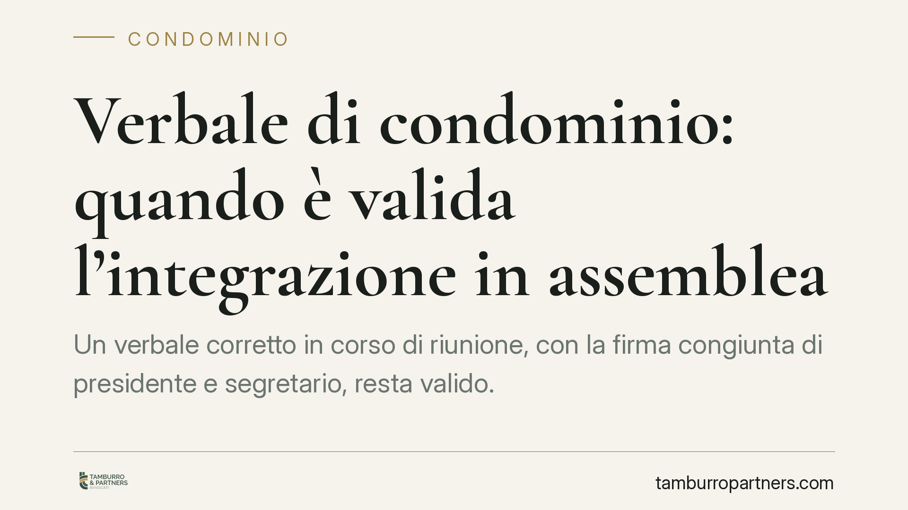

Verbale di condominio: quando è valida l'integrazione in assemblea
Un verbale corretto in corso di riunione, con la firma congiunta di presidente e segretario, resta valido. Lo ha ribadito la giurisprudenza di merito, in linea con la Cassazione: l'integrazione seduta stante non inficia la delibera. Chi contesta deve però muoversi entro trenta giorni e dimostrare l'irregolarità. Ecco cosa cambia per amministratori e condomini.

Il caso
Un condomino impugna una delibera lamentando che il verbale assembleare sarebbe stato integrato in modo irregolare. Il giudice respinge la contestazione: l'integrazione avvenuta durante la stessa riunione, con la sottoscrizione congiunta di presidente e segretario, è pienamente legittima.
La pronuncia si colloca nel solco di un orientamento consolidato. Va precisato che il riferimento alla singola sentenza va sempre verificato nel testo integrale e nell'anno di pubblicazione, poiché refusi nella numerazione o nella data non sono infrequenti nelle rassegne. Ciò che conta, ai fini pratici, è il principio: la correzione del verbale *seduta stante* non costituisce vizio.
Inquadramento normativo
Il verbale dell'assemblea è l'atto che documenta lo svolgimento della riunione e il contenuto delle deliberazioni. La sua redazione è affidata al segretario e la validità è garantita dalla firma del presidente, ai sensi delle disposizioni sul funzionamento dell'assemblea (artt. 1136 e seguenti c.c.).
La doppia sottoscrizione di presidente e segretario non è una formalità di stile. Assolve una funzione di garanzia: attesta che il testo trascritto corrisponde a quanto effettivamente discusso e deciso e cristallizza la responsabilità di chi ha diretto e verbalizzato la seduta. Per questo l'integrazione compiuta prima della chiusura dei lavori, con la firma di entrambi, è considerata parte fisiologica della verbalizzazione e non un'alterazione successiva.
Sul valore probatorio occorre essere precisi. Il verbale assembleare non è atto pubblico e non fa piena prova fino a querela di falso. Ha un'efficacia probatoria significativa, ma è liberamente contestabile con prova contraria: chi sostiene che il verbale non riporti fedelmente lo svolgimento dell'assemblea può dimostrarlo con ogni mezzo, senza necessità di attivare il procedimento per querela di falso.
Nullità o annullabilità?
La distinzione è decisiva per i tempi di reazione.
- La nullità colpisce le delibere con vizi radicali (oggetto impossibile o illecito, mancata convocazione totale, incidenza su diritti individuali) ed è deducibile senza limiti di tempo.
- L'annullabilità riguarda i vizi formali e procedurali, tra cui le irregolarità del verbale. Qui opera il termine dell'art. 1137 c.c.
Un'irregolarità nella verbalizzazione appartiene, di regola, alla categoria dei vizi formali e comporta quindi annullabilità, non nullità. Con una conseguenza pratica pesante: se non impugnata nei termini, la delibera si consolida e diventa definitiva.
I termini di impugnazione
L'art. 1137 c.c. fissa in trenta giorni il termine per impugnare la delibera annullabile. La decorrenza cambia a seconda della posizione del condomino:
- per i dissenzienti e gli astenuti (che devono essere stati presenti o comunque legittimati), il termine decorre dalla data della deliberazione;
- per gli assenti, il termine decorre dalla comunicazione del verbale.
La distinzione non è teorica: sbagliare il *dies a quo* significa rischiare la decadenza. Chi era presente e dissenziente non può attendere la ricezione del verbale per far partire il conteggio.
Approfondimento: l'onere della prova
Chi contesta l'integrazione ha l'onere di dimostrare l'irregolarità. Non basta affermare che il testo è stato modificato: occorre provare che l'integrazione sia avvenuta dopo la chiusura della seduta o senza le firme richieste, alterando il contenuto delle decisioni assunte.
È un punto spesso sottovalutato. In assenza di prova contraria, il verbale sottoscritto conserva la sua efficacia. Per questo la giurisprudenza di legittimità distingue con nettezza tra vizi meramente formali, che raramente incidono sulla validità sostanziale della delibera, e vizi che compromettono l'effettiva volontà assembleare.
Cosa fare in concreto
- Verificate la vostra posizione in assemblea. Stabilite se eravate presenti (dissenzienti o astenuti) o assenti: da questo dipende il momento da cui contare i trenta giorni.
- Calcolate subito il termine. Trenta giorni dalla deliberazione per i presenti, dalla comunicazione del verbale per gli assenti. Il termine è di decadenza.
- Documentate l'irregolarità. Raccogliete elementi (registrazioni ammesse, testimonianze, comunicazioni) idonei a provare che l'integrazione non è avvenuta seduta stante o senza le firme richieste.
- Distinguete vizio formale e vizio sostanziale. Un errore di verbalizzazione che non altera le decisioni difficilmente giustifica l'annullamento.
- Curate la redazione se siete amministratori. Fate sottoscrivere ogni integrazione da presidente e segretario prima di chiudere la seduta.
---
*Contributo informativo a cura di Tamburro & Partners - Avv. Giuseppe Tamburro. Non costituisce parere legale.*
Ogni condominio ha una storia a sé.
Se gestisci un'amministrazione e vuoi un confronto su una specifica questione condominiale, scrivi allo studio. Ti rispondiamo entro un giorno lavorativo.